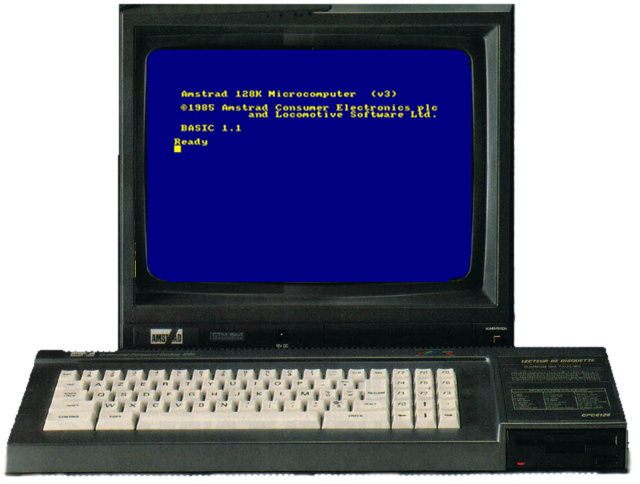

Asus kEeeboard -- way kewl
Asus just unveiled their prototype Eee keyboard at the Consumer Electronics Show in Las Vegas. It looks so much like my first ever computer (an Amstrad CPC 6128). Check it out:


It also has some really neat features. I hope it gets marketed, I want one! Especially if it boots in under a second like the old 8-bit machines. I remember when the computer was ready before the CRT had even finished warming up... those were the days.
